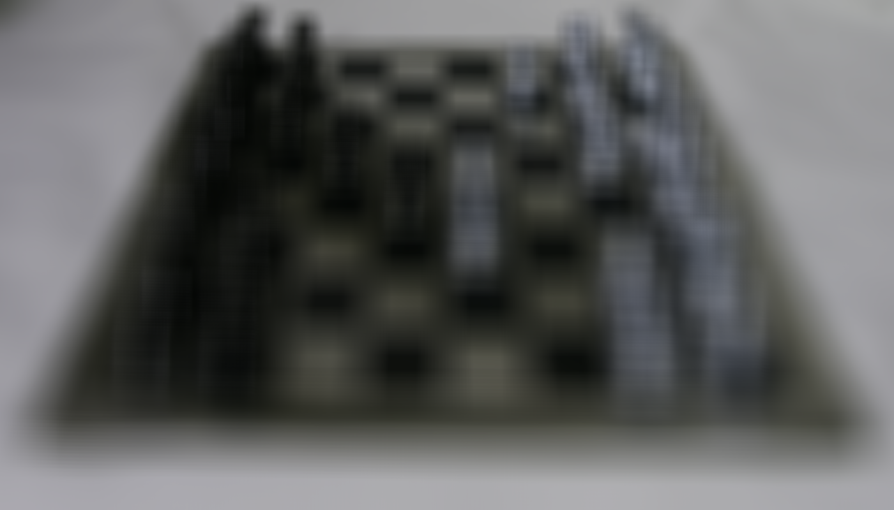
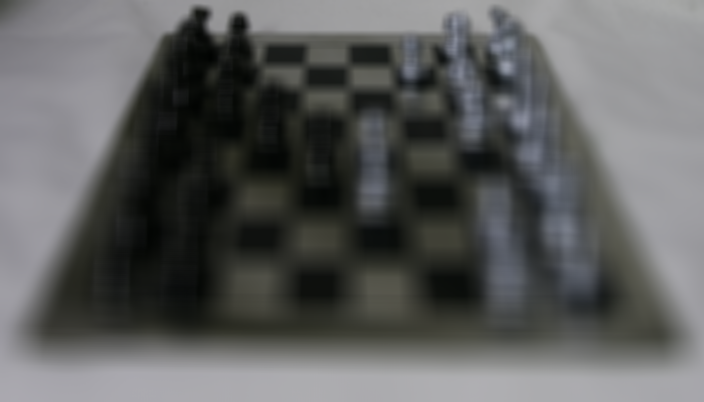
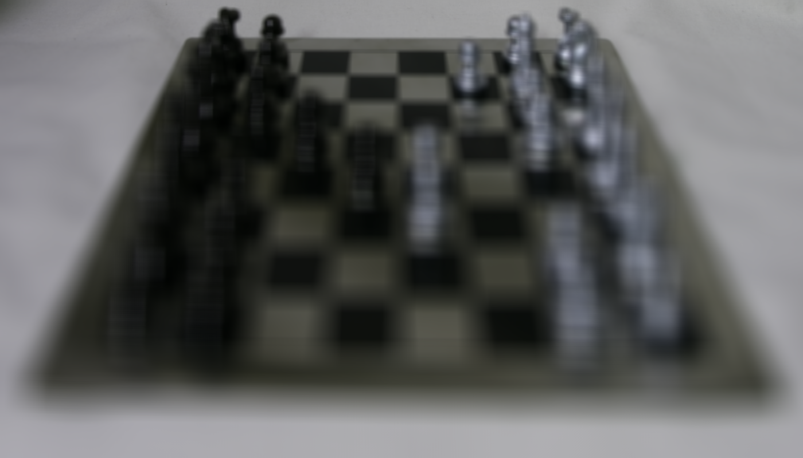
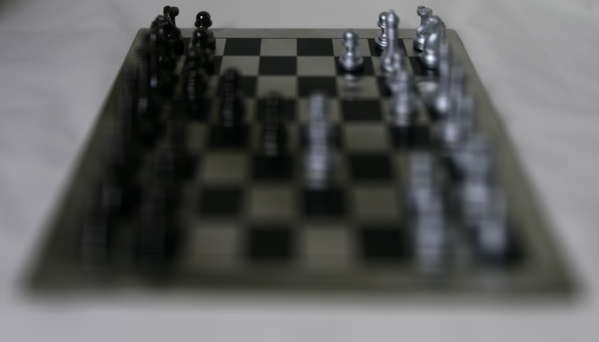
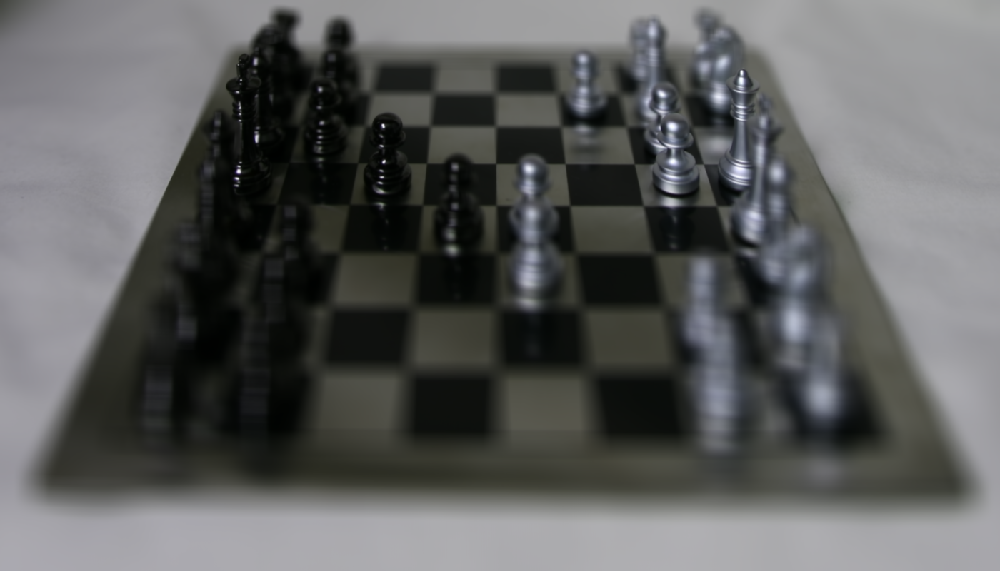
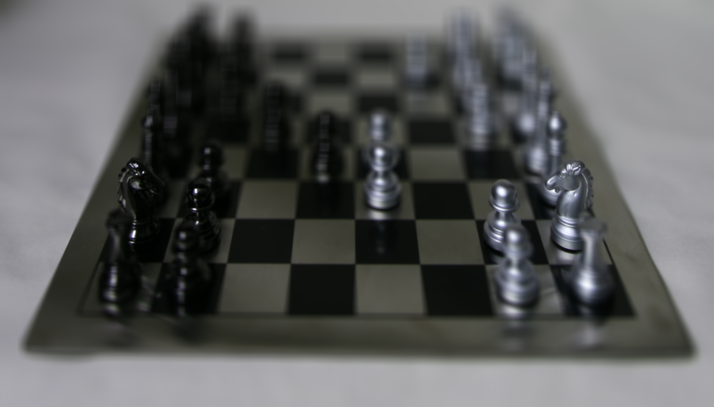
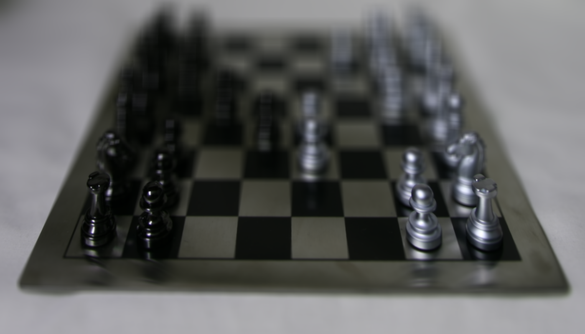
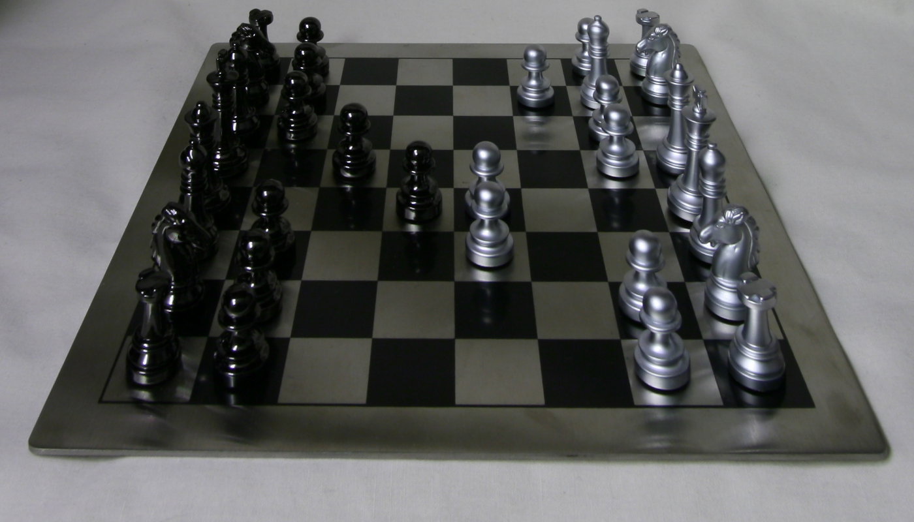
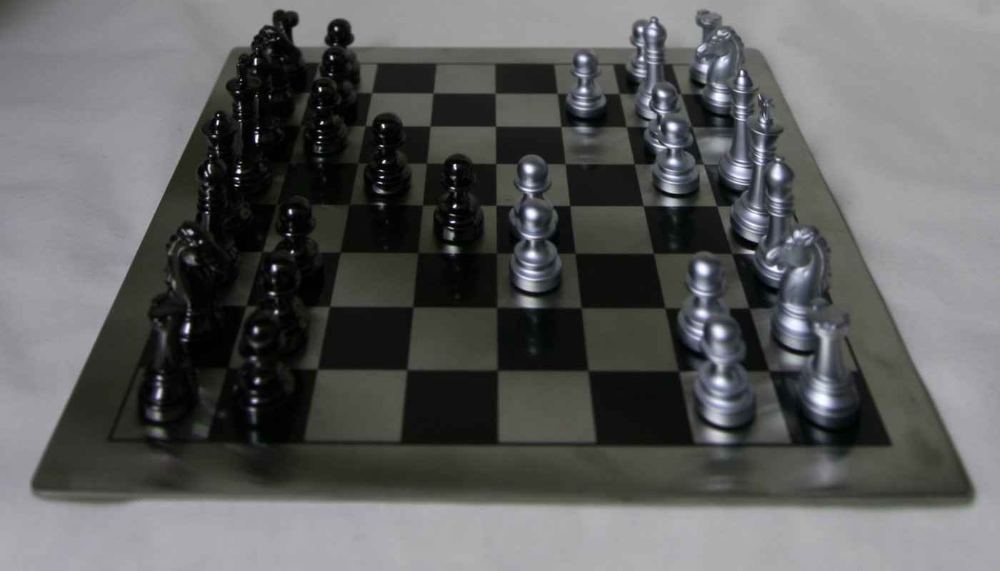

In this project, I worked with a set of light field images. By shifting
and averaging multiple viewpoints acquired on a plane perpendicular to the
optical axis, I could control the plane of focus after capture. Changing
the shift parameters (alpha) corresponds to refocusing at different depths
in the scene. Additionally, by varying the number of cameras averaged, I
simulated changing the aperture size: using more cameras approximates a
larger aperture, resulting in shallower depth of field.
Depth Refocusing

Alpha -0.50
Alpha -0.40

Alpha -0.30

Alpha -0.20

Alpha -0.10
Alpha 0.00

Alpha 0.10
Alpha 0.20
Alpha 0.30

Alpha 0.40

Alpha 0.50
Since we can generate a bunch of these images, we can make a gif that
slowly changes the focus of the given image! This shows the focus sweeping
from one depth plane to another as alpha changes. Note how different parts
of the scene come into sharp focus depending on the chosen alpha value.
I generated a series of images by varying alpha. Each image is produced by
shifting all the rectified images according to their camera positions and
the chosen alpha, and then averaging. As alpha increases or decreases,
different depth planes become sharp.
Simulating Different Apertures
By fixing a particular focus plane (choosing a single alpha that brings a
certain region into best focus) and then varying how many cameras I
average, I can simulate different aperture sizes. Fewer cameras correspond
to a smaller synthetic aperture (and thus deeper depth-of-field), while
using more cameras creates a larger aperture (and shallower
depth-of-field).
Below are some examples. All these images are focused at the same plane,
but differ in how many camera viewpoints are averaged:

1 Camera (Small Aperture)

9 Cameras
25 Cameras
81 Cameras
121 Cameras
289 Cameras (Large Aperture)
As the number of cameras (aperture size) increases, you can see the
out-of-focus regions becoming blurrier, while the focused region remains
sharp. This is analogous to using a lens with a larger physical aperture,
which reduces the depth-of-field.
Conclusion
This project demonstrates the power of synthetic aperture imaging and
post-capture refocusing using light field data. By computationally
combining images from multiple viewpoints, we can simulate changing focus
and aperture size after the images have been captured, achieving effects
that would normally require specialized optics.